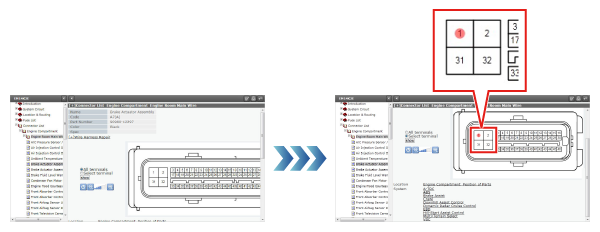

Electrical Wiring Diagrams include the following categories, and the relevant items included in each Category are stated.
Select the item to display from the tree, and display the Electrical Wiring Diagram or System Circuit Diagram. In Electrical Wiring Diagram, lists, and System Circuit Diagrams, parts can be checked on the tree.
Description of the Electrical Wiring Diagram screen
1
Reset
Resets the display zoom.
Cancels part selections.
2
Shorten Pane
Reduces the size of the illustration.
3
Display zoom ratio indicator
Displays the display zoom ratio.
Display zoom ratio
Display zoom ratio indicator
25%
50%
70%
100% (Reset)
150%
200%
400%
4
Enlarge
Enlarges the size of the illustration.
5
Compact Display
Displays only the circuit diagram for the selected part.
For details, see Execute Compact Display.
HINT
This button is not displayed if the Internet Explorer version is 6.0/8.0.
6
Undo Compact Display
Undo compact display and display the entire circuit diagram.
HINT
This button is not displayed if the Internet Explorer version is 6.0/8.0.
7
Cancel Compact Display
Cancels Compact Display.
8
Status Display
Displays the screen refresh status.
9
Relocation
Displays the Relocation Diagram in which the currently-displayed relay block or junction block is placed.
10
J/B and R/B diagram
Displays the J/B and R/B Diagram that corresponds to the currently displayed Internal Circuit Diagram.
11
Internal Circuit Diagram
Displays the relocation diagram in which the currently-displayed relay block or junction block is placed.
12
Connectors and Other Details
Displays detailed information for connectors relevant to parts selected in the System Circuit Diagram, Relocation Diagram, or Internal Circuit Diagram.
System Circuit Diagram
System Circuit Diagrams consist of Power Supply Circuit Diagrams, Earth Point Circuit Diagrams, and System Circuit Diagrams. Circuit diagrams can be used to check the positions of connectors, wiring harnesses, fuses, relays, etc., and the wiring of systems.
Display Connectors and Other Details from System Circuit Diagrams
Select the part or wire and click on the Connectors and Other Details.
Connectors and Other Details are displayed for the selected part or for parts connected to the wire.
Execute Compact Display
In Compact Display, select multiple wires or parts and switch to a condensed display that only includes the connections between those wires.
Select parts or wires in the System Circuit Diagram and click on the Compact Display button.
Wires are displayed flashing, and parts are displayed flashing (in red).
If a wire is selected, the parts at the two ends of that wire flash alternately.
HINT
Internet Explorer versions 6.0/8.0 do not support Compact Display.
Fuse list
The fuse list can be used to check the names and capacities of fuses. It can also be used to check which systems are supplied with power by which power supplies.
Display the J/B and R/B Diagram from the fuse list
Click on the J/B and R/B in the fuse list, or on the button for the fusible link block name.
The J/B and R/B Diagram is displayed.
Display the System Circuit Diagram from the fuse list
Click on the System name.
The System Circuit Diagram is displayed, and the fuses associated with the selected system are displayed flashing.
Connectors and Other Details
The Connectors and Other Details screen can be used to check information such as the parts and connector numbers connected to each connector, and Part Nos. Information can be displayed about Harness Diagrams and System Circuit Diagrams etc. related to connectors.
Description of the Repair Wiring Harness Screen
Click on Repair Wiring Harness to display information about repairing the wiring harness.
1
Terminal Types
2
Identification of Male and Female Terminals
3
Terminal types and Part Nos.
4
Sleeve forms and Part Nos.
5
Connector Housing Sectional Diagram
The list displays of Harness Diagrams and System Circuit Diagrams related to the selected terminal can be switched
Items from Harness Diagrams and System Circuit Diagrams can be displayed for all terminals, or only those that are related to the selected terminal.
Display a list of Harness Diagrams and System Circuit Diagrams for all terminals
Select all terminals and click on Switch Display.
All Harness Diagrams and System Circuit Diagrams related to all terminals are displayed.
Display a list of Harness Diagrams and System Circuit Diagrams for the selected terminals only
Click on the connector number on the Connector Diagram.
The connector number that was clicked on is displayed in red.

Chose Selected Terminals and click on Switch Display.
All Harness Diagrams and System Circuit Diagrams related to the selected connector number are displayed.
Display the Harness Diagram (Wiring Harness Diagram or J/B and R/B Diagram) from Connectors and Other Details
Select a part name and click on the link.
The Wiring Harness Diagram is displayed and the connectors of the selected part are displayed flashing.
HINT
If connector or earth point information is displayed, display the Wiring Harness Diagram. If relay or fuse information is displayed, display the J/B and R/B diagram.
Display System Circuit Diagrams from Connectors and Other Details
Click on a part name.
The System Circuit Diagram is displayed, and the selected part is displayed flashing.
Wiring Harness Diagram
Wiring Harness Diagrams can be used to check the mounted positions, earth points, and connector Nos. of the connectors and wiring harness used in all parts of the vehicle.
Display a list of wire names from the Wiring Harness Diagram
Click on a wire name.
Display a list of wire names.
Display Connectors and Other Details from Wiring Harness Diagrams
Select the connector number and click on the Connectors and Other Details button.
Connectors and Other Details are displayed.
J/B and R/B Diagram
J/B and R/B Diagrams can be used to check the positions and other detailed information on the positions of connectors, relays, and fuses that are connected to junction blocks and relay blocks.
Display Relocation from a J/B and R/B Diagram
Select the connector number and click on the Relocation button.
Relocation is displayed and the part with the selected connector number flashes.
Display Internal Circuit Diagrams from J/B and R/B Diagrams
Select a connector number and click on the Internal Circuit Diagram button.
The Internal Circuit Diagram is displayed and the selected connector No. is displayed flashing.
Display Connectors and Other Details from J/B and R/B Diagrams
Select the connector number and click on the Connectors and Other Details button.
Connectors and Other Details are displayed.
Internal Circuit Diagram
Internal Circuit Diagrams can be used to check the internal circuits of junction blocks and relay blocks.
Display Relocation from an Internal Circuit Diagram
Select the connector number and click on the Relocation button.
Relocation is displayed and the part with the selected connector number flashes.
Display J/B and R/B Diagrams from Internal Circuit Diagrams
Select a connector number and click on the J/B and R/B Diagram button.
The J/B and R/B Diagram is displayed and the selected connector No. is displayed flashing.
Display Connectors and Other Details from Internal Circuit Diagrams
Select the connector number and click on the Connectors and Other Details button.
Connectors and Other Details are displayed.
Relocation
Relocation can be used to check the mounted positions on the vehicle of relays, relay blocks, junction blocks, fusible links, computers, etc.
Display a J/B and R/B Diagram from Relocation
Select a part name and click on the J/B and R/B button.
The J/B and R/B Diagram is displayed.
Display Internal Circuit Diagrams from Relocation
Select a part name and click on the Internal Circuit Diagram button.
The Internal Circuit Diagram is displayed and the connector Nos. of the selected part are displayed flashing.